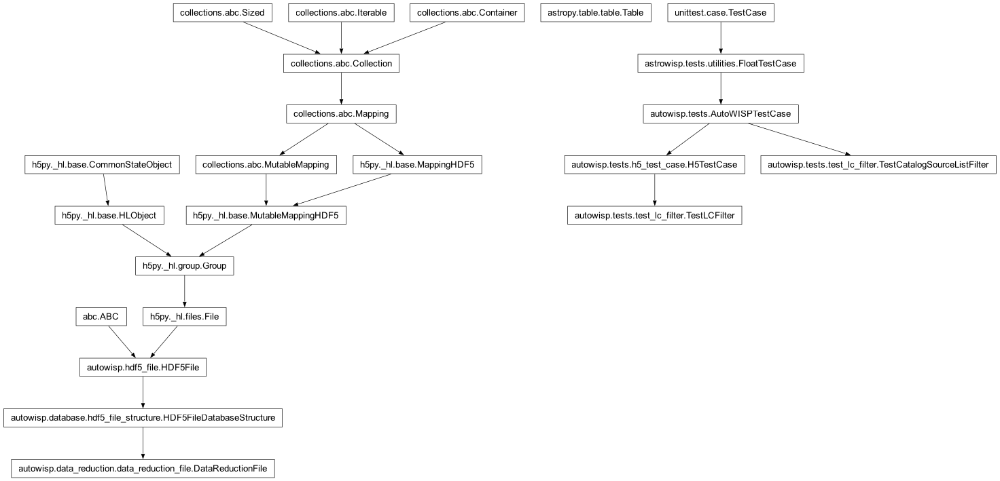
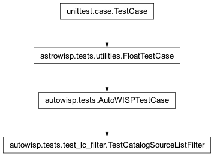
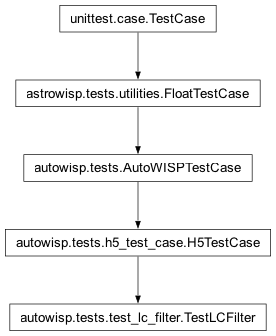

autowisp.tests.test_lc_filter module
Class Inheritance Diagram

Tests for restricting light curves to a subset of the DR sources.
Two mechanisms are exercised (see lc_filter):
A brighter magnitude limit for the light-curve catalog than for the photometry catalog (
TestLCFilter.test_bright_mag_limit).An explicit list of GAIA source IDs to keep (
TestLCFilter.test_manual_source_list), and the two combined (TestLCFilter.test_combined).
The processing branches are subset self-consistency checks: the restricted run must reproduce, bit for bit, the light curves and EPD statistics of the full-catalog fixtures – only for the sources that survive the restriction. EPD is per-source independent, so kept sources are identical; TFA would not be, which is why only EPD is checked.
TestCatalogSourceListFilter is a hermetic unit test of the read-time
source_id filtering added to autowisp.catalog.read_catalog_file().
- class autowisp.tests.test_lc_filter.TestCatalogSourceListFilter(methodName='runTest')[source]
Bases:
AutoWISPTestCase
Read-time
source_idfiltering inread_catalog_file.
- class autowisp.tests.test_lc_filter.TestLCFilter(methodName='runTest')[source]
Bases:
H5TestCase
End-to-end subset tests for restricted light-curve creation.
- _astrometried_dr_files()[source]
DR files that carry a Version000 sky-to-frame solution.
get_catalog_inforeads the astrometry of every DR passed to it to size the catalog; the outlier frame without a solution must be excluded, exactly as the pipeline’s DR selection does.
- _compare_lc(source_id, groups, ignore)[source]
Assert generated LC for
source_idmatches the full fixture.
- static _is_postprocessing(lc_path)[source]
True for EPD/TFA groups (excluded from the create-LC compare).
- _run_restricted_lc(kept_ids, extra_args)[source]
Run create_lightcurves -> epd -> stats and check the kept subset.
- _stage_mag_limited_lc_catalog(mag_limit)[source]
Stage a magnitude-limited LC Gaia catalog offline; return kept IDs.
The LC catalog cache filename is a checksum of the query (including the magnitude limit), so a brighter limit resolves to a name absent from the staged cache and would trigger a live query. Compute that name via
get_catalog_info(ascollect_light_curvesdoes) and write a magnitude-subset of the staged mag<=12 catalog there.Returns the source IDs (str) expected to get a light curve: the full-run LC sources with
phot_g_mean_mag <= mag_limit.